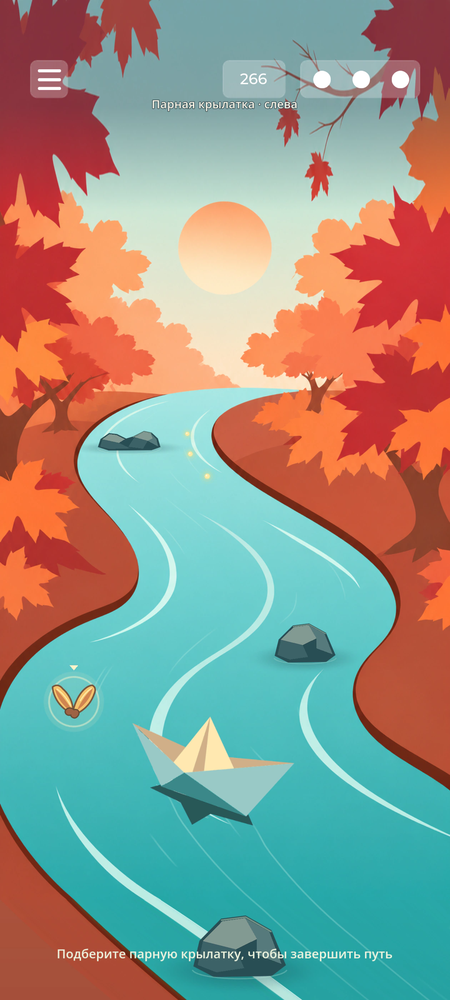

Клёновый плёс
Медные кроны отражаются в бирюзовой воде. Среди огоньков плывёт находка с двумя янтарными крыльями.

Медный ключ с Мельничной речки открывает восьмую карту. В конце пути подберите парную крылатку. Она останется в коллекции, а в меню уровней откроется Приливная протока.
Все новости